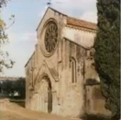

Gualdim Pais
(Braga 1118 - Tomar 1195)
D. Gualdim Pais (Gaudinus, Galdinus o Gualdinus in latino), Gran Maestro dell'Ordine del Tempio in Portogallo (1157-1195), è stato il fondatore del castello di Tomar.
Vita
Figlio di Paio Ramires e di Gontrode Soares, nacque nella regione del Minho, a nord di Braga, nel 1118.
Venne allevato presso il monastero di Santa Croce di Coimbra e ben presto entrò a servizio del futuro re, Alfonso Henriques, che assistette con due compagni d'arme, i cavalieri Mem Ramires e Martin Moniz, in tutte le sue battaglie contro i Mori per la conquista del regno. Si fece particolarmente onore in occasione della presa di Santarém nel 1147, quindi di quella di Lisbona nel 1149, prima di imbarcarsi per la Palestina, dove partecipò all'Assedio di Gaza nel 1153.
Il suo stile e la sua prestanza di guerriero e capo aumentarono ancora di più il prestigio derivatogli dalle notevoli qualità di combattente e organizzatore. Il soggiorno in Oriente venne quindi a completamento di un'esperienza militare già confermata. Al ritorno dalla Crociata, egli sapeva già quale missione l'attendeva. Nel 1157, venne nominato quarto Gran Maestro dell'Ordine del Tempio in Portogallo, con base a Braga.
La visione di San Bernardo di Chiaravalle
Alcuni anni prima, mentre Alfonso Henriques si preparava alla famosa battaglia di Santarém, San Bernardo fece sapere a Gualdim Pais che in sogno aveva visto la Santa Vergine che gli rivelava la vittoria del Re.
Il Re fece subito voto di offrire a Chiaravalle, in caso di vittoria, le terre e i sussidi necessari alla costruzione di una grande abbazia. Essendo riuscito a portare a compimento questa impresa decisiva, il Re mantenne la propria promessa e San Bernardo si recò di persona ad Alcobaça accompagnato da cinque monaci-architetti incaricati di delimitare i terreni necessari alla Fondazione, per la quale il giovane sovrano stesso pose la prima pietra.
Ma l'installazione di un monastero in un territorio tanto "in vista" necessitava di una seria protezione militare e il Re affidò tale compito ai Templari, che possedevano già alcuni castelli nella regione. L'Ordine del Tempio ricevette quindi in dono dal Re tutte le terre situate tra Santarém e Tomar. Gualdim Pais venne incaricato di progettare una "fascia" difensiva attorno ai beni di Chiaravalle, che servisse anche per rinforzare la protezione delle linee portoghesi contro le incursioni arabe.
Nel 1160, Gualdim Pais ordinò la costruzione del Convento di Cristo e del castello di Tomar, che divenne il Quartier Generale dei Templari in Portogallo, e dove egli si stabilì nel 1162. A lui si deve inoltre l'iniziativa della costruzione dei castelli di Almourol, Idanha, Ceres, Castelo Branco, Monsanto e Pombal. Pais s'insediò a Pombal nel 1174.
Nel 1190, Tomar venne assediata dagli Almoravidi sotto il comando del Re del Marocco, Yusuf I, ma Gualdim Pais riuscì a difendere il castello contro forze assai superiori a quelle di cui egli stesso disponeva, impedendo così l'invasione dell'area settentrionale del regno da parte di tale dinastia.
Pais morì a Tomar durante l'anno 1195 (1233 dell'era di Spagna). Le sue ceneri riposano nella chiesa di Santa Maria do Olival, a Tomar, dove una stele muraria ricopre una nicchia che contiene i resti del cavaliere.
|  |  |
 |
Per le sue qualità personali di coraggio, per le sue azioni instancabili, per i suoi successi, Gualdim Pais rappresentava il tipo ideale di cavaliere templare, il cui fervente ricordo dimora tuttora in terra portoghese. Pare che egli rappresentasse anche l'ideale dell'iniziato perfetto, in grado di operare con preconoscenza per l'avvenire del proprio paese, le cui opere dovevano solo essere portate a compimento dai suoi successori.

Insediamento dell'Ordine del Tempio in Portogallo
Appena due mesi dopo la comparizione del fondatore dell'Ordine del Tempio di fronte al concilio di Troyes (il cui ruolo sarebbe stato di fondamentale importanza ai fini del riconoscimento e dello sviluppo dell'ordine), uno dei suoi compagni ricevette una prima ingente donazione in Portogallo. Il 19 marzo 1128, la regina Teresa, vedova del conte Enrico e tutrice del figlio Alfonso, concesse all'Ordine del Tempio il castello di Soure con i terreni annessi. In seguito, altri doni si aggiunsero rapidamente (non necessariamente provenienti da potenti signori, ma comunque in numero notevole). Tra il 1128 e il 1130, 19 beni fondiari, tra i quali molti domini rurali, vennero concessi, per intero o in parte, ai Templari. Nel mese di giugno 1145, Sancia, figlia della stessa regina Teresa, e suo marito donarono all'Ordine del Tempio il castello di Longrovia, nell'Estremadura portoghese, nonché numerosi terreni annessi nell'area della città di Braga. Nella stessa città, l'arcivescovo Giovanni concesse all'Ordine (lo stesso anno) una casa, un ospedale per i pellegrini e la metà delle rendite ecclesiastiche della città, comprese le decime. Parallelamente, i Templari praticarono una politica attiva di acquisti, coniugata con la devozione dei fedeli, i cui lasciti testamentari erano regolari e importanti.
A partire dal 1143, presenza permanente dei Templari in Portogallo
I premi segni tangibili della presenza permanente dell'Ordine del Tempio nel regno comparvero a partire dal 1143, anno in cui un templare francese, Ugo di Martone, venne nominato procuratore del Tempio in Portogallo. L'anno seguente, la piccola guarnigione templare del castello di Soure venne sconfitta in uno scontro con alcune truppe dei Mori di Santarém. Nel 1147, i templari ebbero la rivincita partecipando alla presa della stessa città. L'Ordine ottenne dal re, come premio per gli sforzi compiuti, la facoltà di ricevere tutti i diritti percepiti a Santarém a titolo religioso.
Alla fine del decennio del 1150, sotto il magistero di Gualdim Pais, il quarto Gran Maestro portoghese nel regno, cominciò la straordinaria crescita dell'Ordine del Tempio. Durante tale decennio, i Templari ricevettero dal re un importante dominio agricolo alla confluenza tra il Nabão e lo Zêzere, avviando in tale luogo la costruzione del castello di Tomar, destinato a diventare in seguito la sede dell'Ordine del Tempio in Portogallo, quindi quella dell'Ordine di Cristo. Una decina di anni più tardi, nel quadro di un grande appannaggio di terre a sud del Tago, che rimarrà però lettera morta, il re insistette affinché le risorse dell'Ordine venissero utilizzate solo all'interno del regno, in particolare a vantaggio della la reconquista.